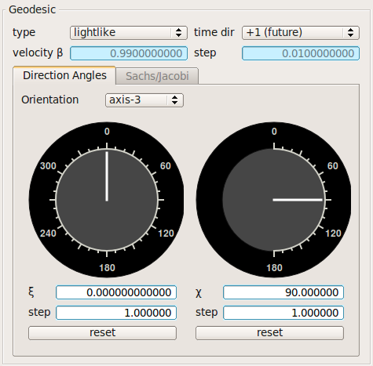
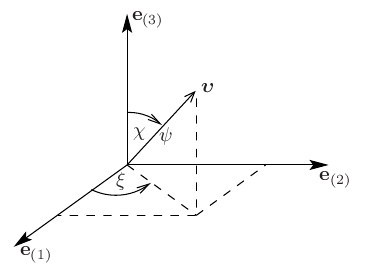
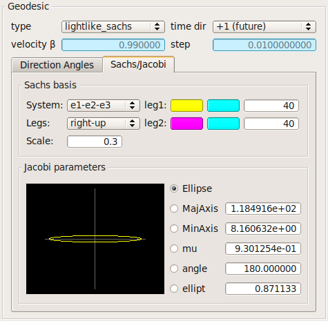

Geodesic
Choose the type of the geodesic and its initial values.

- Type of the geodesic: lightlike, lightlike_sachs (includes parallel transport of Sachs basis and integration of geodesic deviation equation), or time-like.
- If the geodesic is time-like then choose a velocity: |beta|<1.0.
- Time direction: future or past.
The direction angles are given with respect to the local reference frame {e(i)}.

Note that the local reference frame is defined with respect to a natural local tetrad of the space-time, compare Tetrad directions.
| Key |
Description |
| Ctrl + K |
Decrease ξ by 'step' |
| Ctrl + Shift + K |
Increase ξ by 'step' |
| Ctrl + C |
Decrease χ by 'step' |
| Ctrl + Shift + C |
Increase χ by 'step' |
If the geodesic type is "lightlike_sachs", the Jacobi parameters are shown in the "Sachs/Jacobi"-tab.

Note that the cross section of the light bundle (ellipse) is scaled to unity.